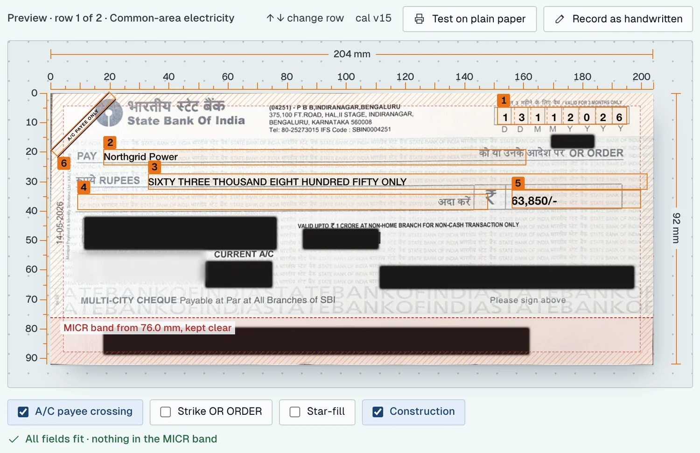
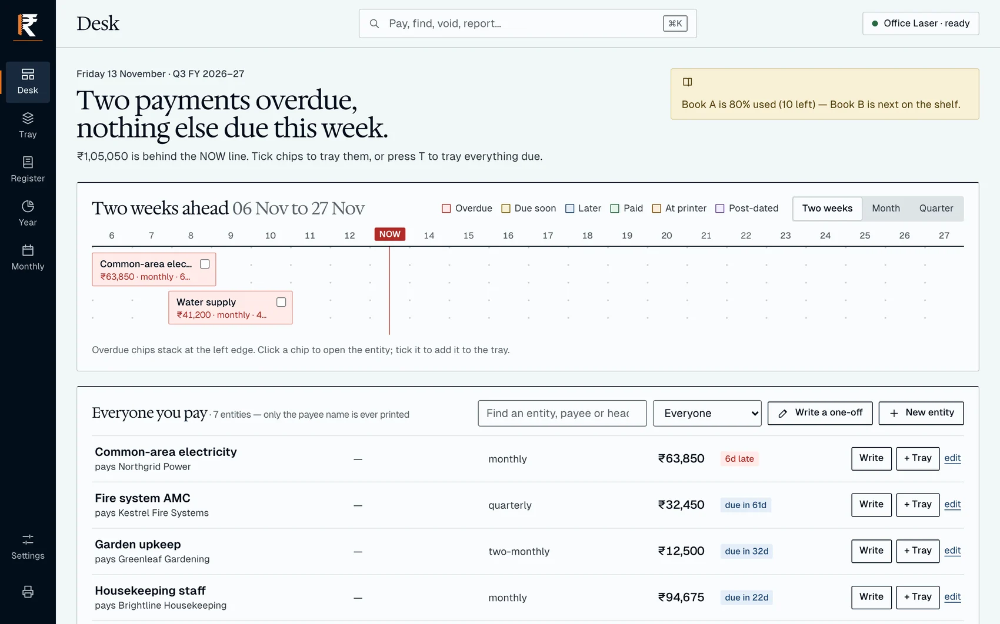

Cheques written, printed and logged.
A Mac and Windows app for small organisations that leaves only the signature to do by hand.
Needs a Mac with Apple silicon (M1 or later). On Windows 10 or 11 (64-bit), download the Windows installer.

A Mac and Windows app for small organisations that leaves only the signature to do by hand.
Needs a Mac with Apple silicon (M1 or later). On Windows 10 or 11 (64-bit), download the Windows installer.
Date, payee, amount and crossing land at millimetre positions measured for the leaf.

It learns which payments recur and how much, then shows what is overdue and coming.

Each leaf is recorded by cheque book: printed, handwritten, spoiled or void, with its trail.

Every payee, amount and leaf number shown here is invented.
By category, quarter and payee, with a monthly PDF and CSV exports.

Choose Skip on the first screen. Nothing else to set up.
Each name as it should print.
Hold it against a real leaf.
A batch waits on its first leaf.
Calibrated for a State Bank of India multi-city leaf on an HP LaserJet Pro MFP M126nw. No warranty: check every cheque.
The changelog on GitHub has the same list; the git history has everything.
For Apple silicon Macs and for Windows 10 and 11 (64-bit). The Mac app is signed with an Apple Developer ID and notarized by Apple; the Windows installer is not yet code-signed. Free under Apache 2.0.